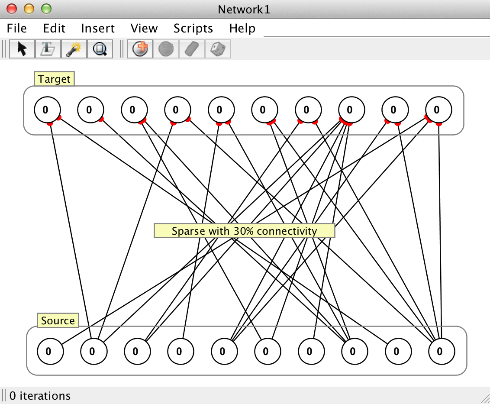
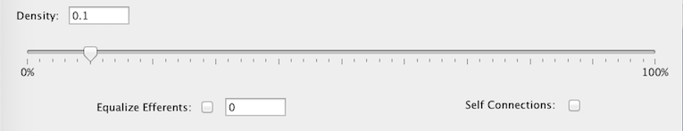

Sparse Connection

An algorithm for determining which neurons ought to be connected between a source and target set of neurons (possibly the same set), given some variable connection density. Density of a connection corresponds to a percentage of the total possible connections (0% being no connections and 100% being the same as connecting every neuron to every other neuron). It might be more accurate to call this algorithm Variable Density Connection since it permits any density of connectivity including those which would not normally be considered "sparse" (thus, it may be renamed in a future release).
Sparse actually has two options for variable density connections, which operate slightly differently: probabilistic connections and fixed number of efferents. These options correspond to whether the Equalize Efferents checkbox (described below) is checked.
Editing Density in Synapse Groups
It should be noted that when this algorithm is used to connect neuron groups with a synapse group, there is some added functionality. Specifically the density of the connections can be dynamically edited. If this connection class is subserving a synapse group it keeps track of a list of possible connections which have been and may be generated such that the set of synapses present at (for example) 50% connectivity will be the same synapses if the connectivity is turned down and then turned back up to 50%. Specific strength values, however are not preserved. Any new synapses generated by editing connection density infer what values they ought to take on based on the group level properties of the parent synapse group.

Sparse Connection Dialog
Density
What percentage of the total possible connections should be created (0 = no connections; 1 = all possible connections). This can be adjusted in the text field (where it is expressed as a value between 0 and 1) or using the slider bar.
Equalize Efferents Unchecked (Probabilistic Connections)
When this method is used, connections will be generated with some probability. Consider the neuron si ∈ SN where SN is the set of neurons given as the source of the to be generated connections (the synapses that will be generated would be considered to be the axons of these neurons), and where i ∈ { 1, ... , N } for N members of set SN. Likewise consider the neuron tj ∈ TM where TM is the set of neurons given as the targets of the to be generated connections, and where j ∈ { 1, ... , M } for M members of set TM. The connection density parameter ρ ∈ (0, 1], simply represents the probability that a connection will be generated between the neurons si and tj for all i, j. Because the selection process is stochastic, there is no guarantee that the number of synapses generated between SN and TM will exactly reflect what would be expected given the density parameter, i.e. it is not guaranteed that this algorithm will generate exactly ρ × N × M connections. If SN ≡ TM, and it has been specified that self connections (synapses where the source and target neurons are the same) are not allowed, then this value would be ρ × N × (N - 1).
Equalize Efferents Checked (Fixed Number of Efferents)
This method also has a connection density parameter, as well as another parameter k ∈ { 1, ... , M }, which is directly tied to ρ. This k parameter determines the exact number of efferent (outgoing) connections which will be generated for each source neuron and comes into play when the equalize efferents parameter is set to true, which will connect the neuron such that each source neuron has the exact same number of outgoing connections. This algorithm is guaranteed to generate k × M synaptic connections ( k × (N - 1) connections if SN ≡ TM and self connections are not allowed) between SN and TM.
Self Connection
If checked, self connections are allowed.
Inhibitory/Excitatory Properties
See the inhibitory/excitatory sub-panel .